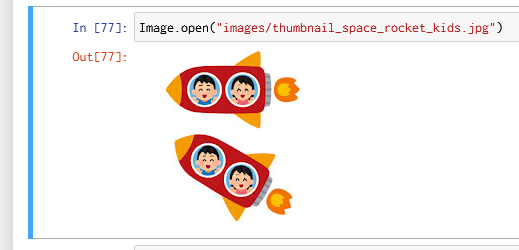
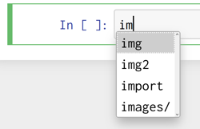
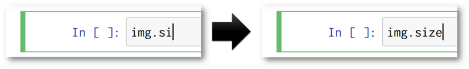
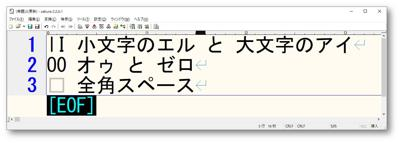

学び合い@令和4（2022）年10月28日
～立山, 2021, 図解pythonのツボとコツがゼッタイにわかる本、第3回「Chapter 04」～
Table of Contents
1. 手を動かす面白さの再発見！
1.1. ドーパミン的面白さ

Figure 1: 僕の初めてのPillow: すぐに結果が出る! 画像を表示できる!
1.2. 実験が簡単にできる
- ショートカットキー c でセルをコピーして、
- v でセルを貼り付けて、
- 貼り付けられたセルのコードを少し変えてみて、
- 実行してみる！！
1.2.1. 例題; 画像ファイルのパス
- バックスラッシュ×2個 ではなくスラッシュでもいいらしいけど、本当？
- バックスラッシュ×1個 だとどうなる？
- 相対パス で指定できるかな？
- 絶対パス で指定できるかな？
1.2.2. Image.thumbnail()
- 数字を1つしか与えなかったら？
- タプルではなかったら？
- 幅または高さしか指定したくない場合にはどうする？
1.3. 急がば回れ
- 読むだけでコードを打ち込むことを省略するべからず
- 先人たちの経験則
- 読むだけで分かったつもりになる…それではナゼか駄目らしい。
- 身体化には時間が掛かる
- 触る → ワクワク → さらに触る → さらにワクワク →→→ 興味の深掘り→→→ 身体化
- 身体化 = 無意識に正確な思考と行動が取れること
- （pythonの）文法の身体化
- jupyter notebookの操作の身体化
- 試行錯誤の身体化
- ノートの取り方、図表の書き方、疑問の立て方
- 触る → ワクワク → さらに触る → さらにワクワク →→→ 興味の深掘り→→→ 身体化
2. 著者と出版社によるサポート
3. プログラミング要素
| コード | コメント | ログ | 可視化 | |
| jupyter notebook を使わない場合 | ○ | ○ | ○ | |
| jupyter notebook を使う場合 | ○ | ○(※1) | ★(※2) |
- ※1. markdown による構造化が可能
- ※2. 画像だけではなく、グラフも表示できる。
コードと実行結果が一つに完結している。まさに NOTEBOOK !!!
3.1. 寄り道: コメントとログの意義の復習
- 物理現象としてはコードだけで十分。
- しかし、エンジニアリング（商売）を行うには、仲間との協力が必要。
- 協力のためにはコードの意義・注意点などを共有する必要がある。
- それはコメントにほかならない。
- エンジニアリング（商売）はより良いものを目指さなければならない。
- さもなければ客が離れてしまう。
- ログはより良くするための材料として必要。
4. 書籍の補足
4.1. 補完機能
vscodeでもおなじみの 便利な機能
4.1.1. 候補が複数ある場合
例えば、"im" まで打った時点でタブを打つと… → いくつかの候補が表示される。

Figure 2: タブによる補完/候補が複数ある場合
4.1.2. 候補が唯一の場合
例えば、"img.si"まで打った時点でタブを打つと… → "img.size" と入力される。

Figure 3: タブによる補完/候補が唯一の場合
4.2. "from PIL import Image" は not only 速度 but also メモリ量の節約
p.82 では
import PIL ではなく、
from PIL import Image と記述することが勧められており、
その理由として打鍵量を少なくできることが挙げられていますが、
メモリを節約できることも重要な点です。
import PIL と Pillow の全ての機能を読み込むよりも、
使う機能である PIL.Image だけを from PIL import Image と読み込めば、
使わない機能を読み込まずに済み、メモリの使用量を抑えられます。
4.3. typo（打ち損じ）に気付きやすいフォント
p.85では大文字の「I」（アイ）と小文字の「l」（エル）が見間違えやすい文字の典型例として挙げられています。 他にも、アラビア数字の「0」（ゼロ）と大文字の「O」（オゥ）も見間違えやすい文字と言われています。
コードは一文字でも間違ってしまうと動かなくなりますので、 プログラミング時に文字が判別しやすいフォントを使うことは、 消極的ですが、導入しやすいバグ防止策と言えます。
いくつかオススメのフォントを挙げておきます。
- Cascadia Code
- https://learn.microsoft.com/ja-jp/windows/terminal/cascadia-code
- by Microsoft
- window10 に インストール済み
- PlemolJP
- https://github.com/yuru7/PlemolJP/releases
- 個人制作 by
- IBM の IBM Plex 由来
- Source Han Code JP（源の角ゴシック Code JP）
- IPAフォント
- https://moji.or.jp/ipafont/ipafontdownload/
- by 一般社団法人文字情報技術促進協議会会長
- 情報処理推進機構（IPA）から民間に移行された一般社団法人
- 参画企業はアドビ株式会社・凸版印刷株式会社・日本マイクロソフト株式会社・株式会社モリサワ・大日本印刷株式会社・富士フィルムシステムサービス株式会社・日本電気株式会社（NEC）・株式会社日立製作所・富士通株式会社 などなど多数
- 情報処理推進機構（IPA）から民間に移行された一般社団法人

Figure 4: PlemolJPの文字の一例
4.4. ショートカットキー
| セルの移動 | 上へ | k | |
| セルの移動 | 下へ | j | |
| セルの実行 | 実行のみ | Ctrl-Enter | |
| セルの実行 | 実行後、下のセルへ移動する | Shift-Enter | |
| セルの挿入 | 上へ | a | Above の a |
| セルの挿入 | 下へ | b | Below の b |
| コピペ | コピー | c | |
| コピペ | ペースト | p | |
| コピペ | カット | x | |
| セルの削除 | d,d | dを2発 | |
| UNDO | z |